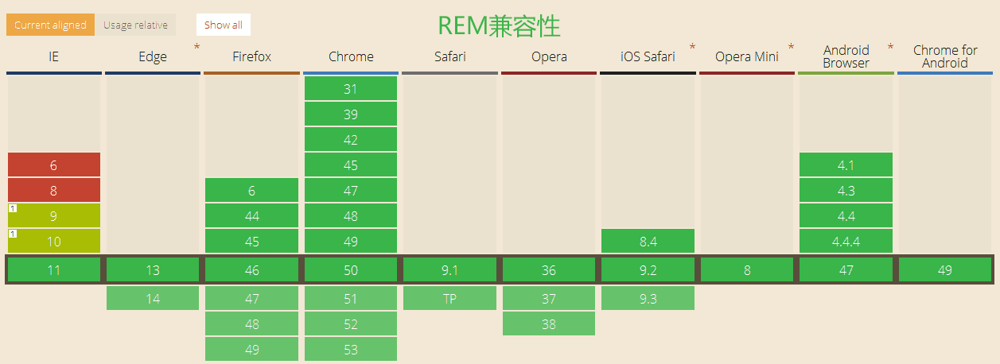

什么是rem?
The rem(for “root em”) is the font size of the root element of the document.
解释来看，就是document中根节点元素的字体大小，可以在JS中通过document.documentElement.style.fontSize来设置，也可以直接css直接设置html字体大小，比如html{ font-size: 14px}，那么1rem就表示14px;
兼容性如下：

rem进行屏幕适配
在介绍rem进行屏幕适配方案之前，我们先了解下一般做移动端适配的几种方法
- 通过百分比设置页面宽度，或者采用flex等css技术实现自适应宽度
- 利用css3 的media query属性来进行适配，大致思路是根据屏幕不同大小，来设置对应的css样式。
那我们期望借助于rem达到怎样的设计效果呢？答案是直接搬设计稿标注的大小来实现，然后会根据手机屏幕宽度自适应展示，大小根据屏幕适配。
我们只需要几个步骤
假设我们的设计稿的宽度是750px
- 按照视觉稿的计算rem基准
设置展示区域的最大宽度750px / 100 = 7.5rem，即1rem= 100px，也就是document根节点的字体大小为100px。之后其他区域的宽高就可以根据视觉稿的标注，除以100展示即可。比如视觉稿标注宽度200px，那我们样式可以直接写成{width: 2rem}即可。 - 根据屏幕宽度，动态设置1rem具体的大小，这里就是一个简单的除法
1rem * 7.5 = document.documentElement.clientWidth
=>
1rem = document.documentElement.clientWidth / 7.5（page_width / fontSize）
然后将这个结果设置为根节点的字体大小即可。
那具体代码实现呢，css的方式可能不太简洁，因为rem基准值是会发生变化的，css设置的话需要把每种屏幕宽度都写一下，不现实，看下JS的实现代码吧，这段在document ready的时候会自执行。
(function (page_width) {
page_width = page_width ? page_width : 750;
window.addEventListener('DOMContentLoaded', function () {
document.getElementById('app').style.maxWidth = (page_width / 100) + 'rem'; // 设置最大宽度，用rem表示
}, false)
var _self = {};
_self.width = page_width; //设置默认最大宽度
_self.fontSize = 100; //默认字体大小
_self.ratio = 320 / page_width;
_self.widthProportion = function () {
var p = document.documentElement.clientWidth / _self.width;
if (p > 1) {
return 1;
}
if (p < _self.ratio) {
return _self.ratio;
}
return p;
};
_self.changePage = function () {
document.documentElement.style.fontSize = _self.widthProportion() * _self.fontSize + 'px'; // 设置rem基准
};
_self.changePage();
window.addEventListener("resize", function () {
_self.changePage();
}, false);
})(750);